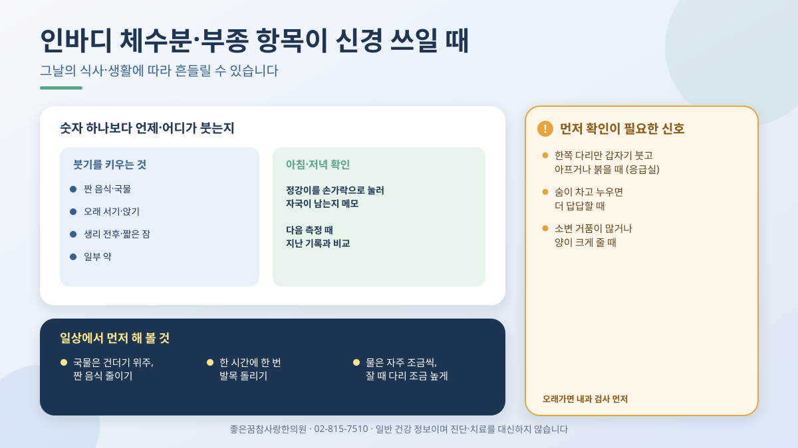
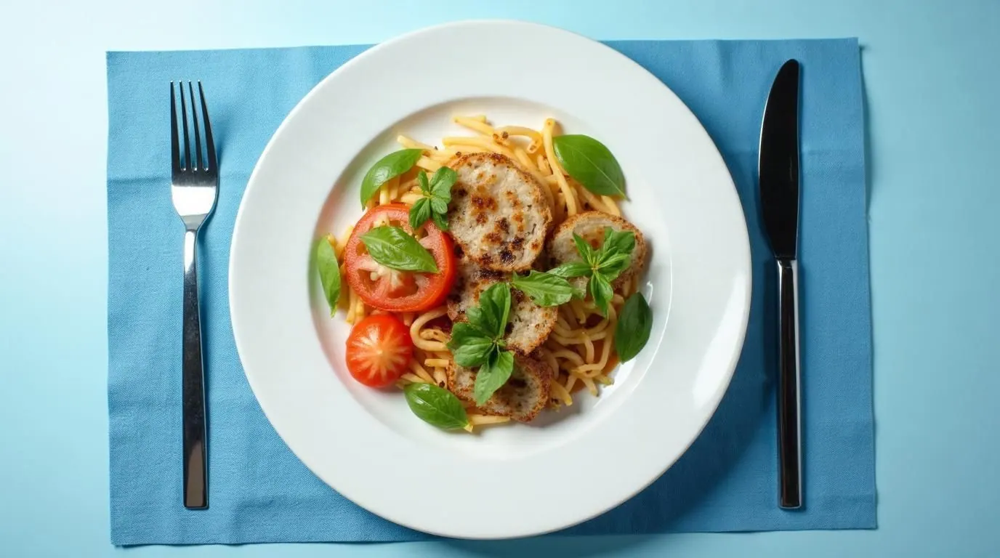
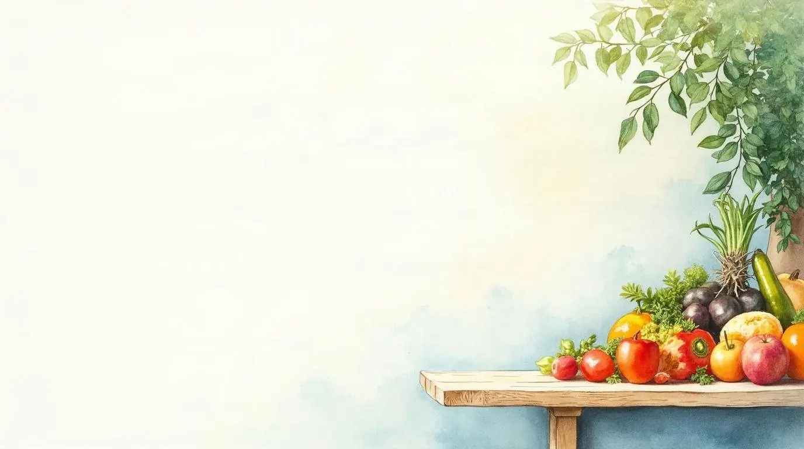

체수분과 부종 관련 수치는 짠 음식, 오래 서 있거나 앉아 있기, 잠, 생리 주기에 따라 달라질 수 있어, 붓는 시간대와 부위를 먼저 묻고 오래가거나 다른 증상이 있으면 내과 검사를 안내합니다.
여쭙는 것
- 주로 언제, 어디가 붓나요?
- 하루에 오래 서 있거나 앉아 있는 편인가요?
- 짠 음식이나 국물을 자주 드시나요?
생활에서 해 볼 것
- 국물은 건더기 위주로 먹고 짠 음식 줄이기
- 오래 앉아 있을 때 한 시간에 한 번 발목 돌리기
- 잘 때 다리를 조금 높여 두기
한의원에서 함께 살필 것
- 저녁마다 다리가 무겁고 붓는 경우 생활 자세와 순환을 함께 살핍니다.
- 생리 전후로 붓기가 심한 경우 주기와 몸의 변화를 함께 살핍니다.
- 붓기와 함께 피로가 큰 경우 잠과 식사 리듬을 함께 살핍니다.
먼저 확인이 필요한 신호
- 한쪽 다리만 갑자기 붓고 아프거나 붉어지는 경우
- 숨이 차고 누우면 더 답답한 경우
- 소변에 거품이 많거나 양이 크게 줄어든 경우

결과지의 체수분·부종 항목은 그날의 식사와 생활에 따라 흔들릴 수 있어, 한 번의 숫자보다 언제 어디가 붓는지와 함께 보는 것이 중요합니다. 다만 한쪽 다리만 붓거나 숨이 함께 찬다면 생활 습관보다 다른 원인을 먼저 확인해야 합니다.
좋은꿈참사랑한의원에서 쓰는 인바디 770 결과지에는 체수분과 함께, 세포외수분비처럼 몸속 수분이 어떻게 나뉘어 있는지 보여 주는 칸이 있습니다. 이 칸의 기준은 나이와 몸 상태에 따라 달라 이 글에서 숫자로 정하지 않고, 진료 때 결과지의 표준 범위 표시를 함께 보며 설명드립니다. 아래에서는 붓기를 어떻게 적어 두면 좋은지, 며칠 지켜봐도 되는 경우와 바로 확인해야 하는 경우를 나누어 정리했습니다.
왜 이런 불편이 생길 수 있나요
- 짠 음식과 국물을 많이 먹으면 몸이 수분을 붙잡아 두기 쉽습니다. 붓는 시간대와 부위를 며칠 기록해 오시면 결과지 숫자와 함께 보기가 훨씬 쉬워집니다.
- 오래 서 있거나 앉아 있으면 다리 쪽에 수분이 모이기 쉽습니다.
- 생리 전후나 잠이 부족한 날에 붓기를 더 느끼는 분이 많습니다.
- 심장, 신장, 갑상선 문제나 일부 약 때문에 붓는 경우도 있어 오래가면 검사가 필요할 수 있습니다.
- 결과지의 체수분 칸은 그날 마신 물, 짠 음식, 측정 전 운동과 자세에 따라 달라질 수 있어, 한 번의 숫자만으로 붓기의 원인을 판단하지 않습니다.
- 더운 날이나 버스·비행기를 오래 타는 날에 다리 붓기를 더 느끼는 분도 있습니다.

먼저 이렇게 여쭙니다
- 주로 언제, 어디가 붓나요?
- 하루에 오래 서 있거나 앉아 있는 편인가요?
- 짠 음식이나 국물을 자주 드시나요?
- 소변 양이나 색에 변화가 있나요?
- 최근 새로 드시기 시작한 약이 있나요?
스스로 점검해 보세요
- 저녁이면 양말 자국이 깊게 남고 신발이 낀다
- 아침에 눈꺼풀이나 얼굴이 부어 있는 날이 잦다
- 정강이를 손가락으로 눌렀을 때 자국이 한동안 남는다
- 한쪽 다리만 더 붓거나 종아리가 당기고 아프다
- 붓기와 함께 숨이 차거나 누우면 답답하다
- 소변 양이 줄거나 거품이 많아졌다
- 생리 전이나 짠 음식을 먹은 다음 날에만 붓는다
첫째·둘째·일곱째 항목처럼 이유가 짐작되고 하루 이틀 사이 가라앉는 붓기라면 며칠 기록하며 지켜볼 수 있습니다. 셋째 항목이 매일 이어지거나 넷째부터 여섯째 항목에 해당하면 생활 관리보다 확인이 먼저입니다.

일상에서 먼저 해 볼 수 있는 것
- 국물은 건더기 위주로 먹고 짠 음식 줄이기
- 오래 앉아 있을 때 한 시간에 한 번 발목 돌리기
- 잘 때 다리를 조금 높여 두기
- 물은 한꺼번에 많이보다 자주 조금씩 마시기
- 아침과 저녁에 정강이를 손가락으로 눌러 자국이 남는지 메모하기
붓기 기록은 아침과 저녁 두 번, 짧게 남기면 충분합니다. 정강이 자국이 남는지, 양말 자국이 얼마나 깊은지, 그날 짠 음식과 서 있던 시간을 한 줄씩 적고, 가능하면 같은 자리에서 같은 각도로 사진을 찍어 두세요. 인바디 결과지의 체수분 칸은 이런 기록과 함께 볼 때 뜻이 더 분명해집니다.
상황별 예시
- 예를 들어 하루 종일 서서 일하는 직장인이라면, 쉬는 시간마다 까치발 들기와 발목 돌리기를 해 보시고 저녁에 다리를 조금 높여 쉬는 시간을 정해 두세요. 붓기 기록을 근무일과 쉬는 날로 나눠 적어 오시면 생활과의 관계를 보기 쉽습니다.
- 예를 들어 야간 자습으로 오래 앉아 있는 수험생이라면, 한 시간에 한 번 일어나 복도를 걷고 늦은 밤 라면이나 짠 간식을 줄이는 것부터 시작해 보세요. 아침 얼굴 붓기가 어떻게 달라지는지 적어 두면 함께 살피기 좋습니다.
- 예를 들어 혈압약을 드시는 어르신이 최근 발목이 붓기 시작했다면, 약을 스스로 줄이지 말고 처방한 병원에 붓기를 먼저 알려 주세요. 약 이름과 시작한 날짜를 적어 오시면 진료 때도 함께 살핍니다.

얼마나 지켜보고 언제 상담할까요
- 짠 음식을 먹었거나 오래 서 있던 날 뒤의 붓기가 하룻밤 자고 나면 가라앉는다면, 생활 관리를 하며 1~2주 동안 시간대와 부위를 적어 보세요.
- 2~3주가 지나도 붓기가 그대로이거나 점점 넓어진다면 내과 검사와 함께 진료를 받아 보시길 권합니다.
- 새 약을 시작한 뒤 붓기가 생겼다면 기다리지 말고 처방한 의사와 먼저 상의하세요.
- 이럴 땐 바로 확인하세요. 한쪽 다리만 갑자기 붓고 아프거나 붉어질 때, 숨이 차고 누우면 더 답답할 때는 기록을 기다리지 말고 응급실을 찾으세요.
한의원에서 함께 살필 수 있는 경우
- 저녁마다 다리가 무겁고 붓는 경우 생활 자세와 순환을 함께 살핍니다.
- 생리 전후로 붓기가 심한 경우 주기와 몸의 변화를 함께 살핍니다.
- 붓기와 함께 피로가 큰 경우 잠과 식사 리듬을 함께 살핍니다.
좋은꿈참사랑한의원에서는 붓는 시간대와 생활을 먼저 듣고, 필요하다고 판단될 때 인바디 770으로 체수분 흐름을 다시 확인해 지난 기록과 비교합니다. 진맥과 설진으로 몸 상태를 함께 살핀 뒤 생활 관리와 침, 한약 상담 등을 정하고, 붓기가 오래가거나 다른 증상이 함께 있으면 내과 검사를 먼저 안내합니다.
처음 오시면 접수 때 드시는 약과 몸속 전자 의료기기 여부를 적어 주세요. 진료실에서 붓는 시간대와 부위, 소변과 잠을 여쭌 뒤 맥을 짚고 정강이와 발목을 살핍니다. 측정이 필요하다고 판단되면 결과지의 표준 범위 표시와 적어 오신 붓기 기록을 함께 보며 설명드리고, 다음 진료 때 무엇을 다시 볼지 정해 드립니다. 측정 비용이나 보험 적용 여부는 방문 전 전화로 확인해 주세요.

이렇게 기록해 오시면 상담이 쉬워집니다
- 붓는 시간대와 부위(사진이 있으면 더 좋습니다)
- 하루 소변 횟수나 색의 변화
- 생리 주기와 붓기의 관계
- 최근 시작하거나 바꾼 약
이런 증상은 먼저 확인이 필요합니다
- 한쪽 다리만 갑자기 붓고 아프거나 붉어지는 경우
- 숨이 차고 누우면 더 답답한 경우
- 소변에 거품이 많거나 양이 크게 줄어든 경우
- 아침마다 눈꺼풀과 얼굴이 심하게 붓는 경우
혈압약 등 드시는 약은 처방한 의사와 상의 없이 줄이거나 끊지 않습니다. 한쪽 다리가 갑자기 붓고 아프거나 숨이 차면 바로 응급실을 찾으세요.

함께 읽으면 좋은 글
- 저녁이 되면 다리가 퉁퉁 붓는 여성은 생활에서 무엇을 살피나요?
- 오래 앉아 공부하면 다리가 붓고 저릴 때는 무엇을 살피나요?
- 물은 하루에 얼마나 마셔야 하나요? 대사 관리 관점에서
한눈에 보는 표
| 구분 | 핵심 |
|---|---|
| 여쭙는 것 | 주로 언제, 어디가 붓나요? 하루에 오래 서 있거나 앉아 있는 편인가요? |
| 생활에서 해 볼 것 | 국물은 건더기 위주로 먹고 짠 음식 줄이기 오래 앉아 있을 때 한 시간에 한 번 발목 돌리기 |
| 한의원에서 함께 살필 것 | 저녁마다 다리가 무겁고 붓는 경우 생활 자세와 순환을 함께 살핍니다. 생리 전후로 붓기가 심한 경우 주기와 몸의 변화를 함께 살핍니다. |
| 먼저 확인이 필요한 신호 | 한쪽 다리만 갑자기 붓고 아프거나 붉어지는 경우 숨이 차고 누우면 더 답답한 경우 |
자주 묻는 질문
부종 수치가 높으면 병이 있는 건가요?
생활 습관으로도 달라질 수 있지만, 계속되거나 다른 증상이 함께 있으면 내과 검사가 필요할 수 있습니다.
물을 적게 마시면 덜 붓나요?
물을 줄이기보다 짠 음식을 줄이고 자주 움직이는 것을 먼저 권합니다. 심장이나 신장 질환으로 물 양을 조절하라는 안내를 받았다면 그 안내를 따르세요.
생리 전에만 붓는 것도 살펴볼 수 있나요?
네. 주기와 함께 붓기의 변화를 기록해 오시면 몸의 흐름을 함께 살필 수 있습니다.
아침에 얼굴이 붓는 것도 같은 이유인가요?
전날 짠 음식이나 늦은 야식, 짧은 잠 뒤에 아침 붓기를 느끼는 분이 많습니다. 매일 심하게 붓는다면 내과 검사를 함께 권합니다.
이 글은 일반적인 건강 정보이며 개인의 진단이나 치료를 대신하지 않습니다. 증상이 있거나 복용 중인 약이 있다면 진료를 통해 확인하세요. 치료 효과는 개인마다 다를 수 있습니다.
작성 기준: 일반적으로 알려져 있는 건강 정보를 참고해 정리했습니다(대표원장 감수). 증상 기록은 1~2주 동안 하루 1회, 비슷한 시간에 적어 오시면 지난 상태와 비교하기 쉽습니다.
좋은꿈참사랑한의원은 재진 때 지난번 이야기부터 이어서 여쭙니다. 진료시간과 예약은 오시는 길에서 확인하세요.